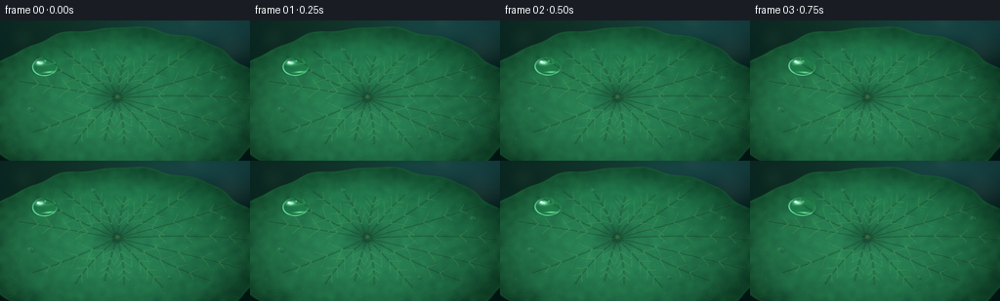
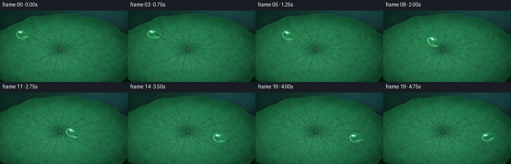
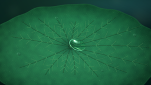

CODING AGENTS AS PIXEL WORLD MODELS
traex/GPT-5.6-Sol · phygen_036
点击播放 · 原生 RGB 像素
逐轮保存的候选
回放视频、检查图与代码变化。
每份候选均可单独播放。实际图片检查记录在下方工具轨迹中。
候选 01播放与检查图
点击播放 · 原生 RGB 像素


展开代码变化
--- 上一保存版本
+++ 本次保存版本
@@ -0,0 +1,264 @@
+from pathlib import Path
+import math
+import numpy as np
+from PIL import Image, ImageDraw, ImageFilter
+import artifact_io
+
+# Macro botanical animation rendered procedurally at 3x resolution.
+W, H, N, S = 256, 144, 20, 3
+WW, HH = W*S, H*S
+rng = np.random.default_rng(36036)
+
+def smoothstep(a, b, x):
+ z = np.clip((x-a)/(b-a), 0.0, 1.0)
+ return z*z*(3.0-2.0*z)
+
+def blur_array(a, radius):
+ im = Image.fromarray(np.clip(a, 0, 255).astype(np.uint8))
+ return np.asarray(im.filter(ImageFilter.GaussianBlur(radius*S))).astype(np.float32)
+
+# Coordinate fields in output-pixel units for convenient geometry.
+yy, xx = np.mgrid[0:HH, 0:WW].astype(np.float32)
+x = xx / S
+y = yy / S
+
+# Deep, defocused pond background.
+pond = np.zeros((HH, WW, 3), np.float32)
+pond[..., 0] = 5 + 6*(1-y/H) + 4*np.sin(x/47)
+pond[..., 1] = 22 + 20*(1-y/H) + 5*np.sin((x+y)/59)
+pond[..., 2] = 21 + 16*(1-y/H)
+# A soft diagonal patch of reflected sky.
+sky = np.exp(-(((x-210)/95)**2 + ((y-7)/24)**2))
+pond += sky[..., None] * np.array([17, 32, 34], np.float32)
+pond_im = Image.fromarray(np.uint8(np.clip(pond, 0, 255)), 'RGB')
+# Out-of-focus round highlights and distant leaf silhouettes.
+bokeh = Image.new('RGBA', (WW, HH), (0,0,0,0))
+bd = ImageDraw.Draw(bokeh, 'RGBA')
+for bx, by, br, col in [
+ (23,18,13,(100,153,112,32)), (236,31,20,(151,181,136,25)),
+ (198,2,9,(220,232,190,27)), (8,115,19,(83,138,108,22)),
+ (248,101,11,(188,205,159,18))]:
+ bd.ellipse(((bx-br)*S,(by-br)*S,(bx+br)*S,(by+br)*S), fill=col)
+bokeh = bokeh.filter(ImageFilter.GaussianBlur(8*S))
+pond_im = Image.alpha_composite(pond_im.convert('RGBA'), bokeh)
+
+# Lotus leaf: a broad, gently scalloped ellipse occupying the macro frame.
+cx, cy = 124.0, 91.0
+dx = (x-cx)/149.0
+dy = (y-cy)/84.0
+ang = np.arctan2(dy, dx)
+rho = np.sqrt(dx*dx + dy*dy)
+edge = 1.0 + 0.015*np.sin(12*ang+0.35) + 0.009*np.sin(21*ang-0.8)
+leaf_alpha = 1.0 - smoothstep(edge-0.010, edge+0.010, rho)
+
+# Rich color modelling: central radial light, shadows in the shallow central cup.
+radial = np.clip(rho, 0, 1)
+light_dir = np.clip(0.70 - 0.0020*x - 0.0024*y, 0, 1)
+cup = np.exp(-(((x-120)/24)**2 + ((y-78)/16)**2))
+edge_shade = smoothstep(0.67, 1.02, radial)
+leaf = np.empty((HH, WW, 3), np.float32)
+leaf[...,0] = 22 + 21*(1-radial) + 12*light_dir - 13*cup - 8*edge_shade
+leaf[...,1] = 86 + 47*(1-radial) + 24*light_dir - 35*cup - 25*edge_shade
+leaf[...,2] = 54 + 33*(1-radial) + 14*light_dir - 20*cup - 17*edge_shade
+# Cool reflected light near upper edge and warmer lower plane.
+leaf[...,1] += 8*np.exp(-((y-27)/30)**2)
+leaf[...,2] += 5*np.exp(-((y-25)/31)**2)
+
+# Fixed multi-scale organic texture and microscopic lotus papillae.
+noise = rng.normal(0, 1, (HH, WW)).astype(np.float32)
+low = blur_array((noise-noise.min())/(noise.max()-noise.min())*255, 2.3)
+low = (low-low.mean())/(low.std()+1e-5)
+fine = rng.normal(0, 1, (HH, WW)).astype(np.float32)
+texture = 3.0*low + 1.2*fine + 1.1*np.sin(x*1.75 + np.sin(y*.4))*np.sin(y*1.35)
+leaf[...,0] += texture*0.35
+leaf[...,1] += texture
+leaf[...,2] += texture*0.45
+leaf_rgba = np.dstack([np.clip(leaf,0,255), leaf_alpha*255]).astype(np.uint8)
+leaf_im = Image.fromarray(leaf_rgba, 'RGBA')
+
+# Vein network, drawn with paired shadow/highlight strokes, clipped to the leaf.
+veins = Image.new('RGBA', (WW, HH), (0,0,0,0))
+vd = ImageDraw.Draw(veins, 'RGBA')
+center = np.array([120.0, 79.0])
+primary_angles = np.array([-2.89,-2.55,-2.20,-1.82,-1.48,-1.10,-0.73,-0.38,-0.04,0.33,0.68,1.03,1.40,1.78,2.18,2.55])
+lengths = [104,105,91,72,65,78,108,130,144,139,116,91,73,68,84,102]
+primary_curves=[]
+for k,(a,L) in enumerate(zip(primary_angles,lengths)):
+ bend = (0.075*np.sin(k*1.71))
+ pts=[]
+ for j in range(45):
+ q=j/44
+ aa=a+bend*q*q
+ # elliptic-looking radial expansion and a slight natural wave
+ px=center[0] + L*q*np.cos(aa)
+ py=center[1] + 0.66*L*q*np.sin(aa) + 0.8*np.sin(q*math.pi)*np.sin(k*2.2)
+ pts.append((int(px*S), int(py*S)))
+ primary_curves.append(np.array([(p[0]/S,p[1]/S) for p in pts]))
+ vd.line(pts, fill=(6,48,30,105), width=max(2,int(1.85*S)), joint='curve')
+ hi=[(p[0],p[1]-max(1,S//2)) for p in pts]
+ vd.line(hi, fill=(129,183,103,82), width=max(1,int(.62*S)), joint='curve')
+
+# Branching secondary veins from each radial spoke.
+for k,curve in enumerate(primary_curves):
+ for m,q0 in enumerate([0.30,0.48,0.66,0.81]):
+ idx=min(43,int(q0*44))
+ p=curve[idx]
+ tang=curve[idx+1]-curve[idx-1]
+ baseang=math.atan2(tang[1],tang[0])
+ for side in (-1,1):
+ la=baseang + side*(0.58 + 0.08*np.sin(k+m))
+ ll=(17-2.2*m)*(0.84+0.12*np.sin(k*1.3+m))
+ pts=[]
+ for j in range(18):
+ q=j/17
+ aa=la + side*0.15*q
+ px=p[0]+ll*q*math.cos(aa)
+ py=p[1]+ll*q*math.sin(aa)
+ pts.append((int(px*S),int(py*S)))
+ vd.line(pts, fill=(10,57,34,63), width=max(1,int(.8*S)))
+ vd.line([(u,v-S//3) for u,v in pts], fill=(151,192,117,34), width=1*S)
+# Clip vein alpha to leaf silhouette.
+va=np.asarray(veins).copy()
+va[...,3]=(va[...,3].astype(np.float32)*leaf_alpha).astype(np.uint8)
+veins=Image.fromarray(va,'RGBA')
+leaf_im=Image.alpha_composite(leaf_im,veins)
+
+# Fine pale stippling on the waxy surface.
+pores=Image.new('RGBA',(WW,HH),(0,0,0,0)); pd=ImageDraw.Draw(pores,'RGBA')
+for _ in range(540):
+ px=float(rng.uniform(5,251)); py=float(rng.uniform(18,143))
+ # only retain points analytically inside the leaf
+ ddx=(px-cx)/149; ddy=(py-cy)/84
+ aa=math.atan2(ddy,ddx); rr=math.hypot(ddx,ddy)
+ ee=1+0.015*math.sin(12*aa+.35)+0.009*math.sin(21*aa-.8)
+ if rr < ee-.018:
+ r=float(rng.choice([.18,.22,.28,.35]))*S
+ col=(184,216,160,int(rng.integers(12,30)))
+ pd.ellipse((px*S-r,py*S-r,px*S+r,py*S+r),fill=col)
+leaf_im=Image.alpha_composite(leaf_im,pores)
+
+# Inner contact point and subtle central fold.
+cent=Image.new('RGBA',(WW,HH),(0,0,0,0)); cd=ImageDraw.Draw(cent,'RGBA')
+cd.ellipse(((115)*S,(74)*S,(125)*S,(84)*S),fill=(4,37,25,55))
+cd.ellipse(((118.2)*S,(76.5)*S,(121.8)*S,(80.2)*S),fill=(181,208,126,55))
+cent=cent.filter(ImageFilter.GaussianBlur(.75*S))
+leaf_im=Image.alpha_composite(leaf_im,cent)
+
+scene = Image.alpha_composite(pond_im, leaf_im).convert('RGB')
+base = np.asarray(scene).astype(np.float32)
+
+# Add a luminous soft rim exactly at the leaf boundary.
+rim_strength=np.exp(-((rho-edge)/.012)**2)*leaf_alpha
+base += rim_strength[...,None]*np.array([8,15,8],np.float32)
+base=np.clip(base,0,255)
+
+def alpha_composite_array(dst, src_rgb, alpha):
+ a=np.clip(alpha[...,None],0,1)
+ return dst*(1-a)+src_rgb*a
+
+def add_small_bead(frame, bx, by, rx, ry, strength=1.0):
+ """Small stationary beads supply scale without distracting from the hero drop."""
+ q=((x-bx)/rx)**2+((y-by)/ry)**2
+ mask=smoothstep(1.05,.82,q)
+ shadow=np.exp(-(((x-(bx+1.2))/(rx*1.05))**2+((y-(by+1.8))/(ry*.72))**2)*3.0)*.24
+ frame[:] = frame*(1-shadow[...,None])
+ rim=np.exp(-((np.sqrt(np.maximum(q,1e-5))-.90)/.12)**2)*mask
+ tint=np.zeros_like(frame); tint[:]=[102,165,139]
+ frame[:] = alpha_composite_array(frame,tint,mask*.10)
+ frame[:] += rim[...,None]*np.array([18,27,23])*strength
+ hi=np.exp(-(((x-(bx-rx*.33))/(rx*.22))**2+((y-(by-ry*.38))/(ry*.22))**2)*2.2)
+ frame[:] += hi[...,None]*np.array([125,135,126])*strength
+
+def render_drop(frame, bx, by, vx, vy, phase):
+ speed=math.hypot(vx,vy)
+ theta=math.atan2(vy,vx)
+ ct,st=math.cos(theta),math.sin(theta)
+ # Surface tension makes the bead gently breathe/wobble as it crosses veins.
+ wob=math.sin(phase*math.pi*4.2)
+ rx=13.7 + min(1.5,speed*.06) + .55*wob
+ ry=10.2 - min(.75,speed*.025) - .30*wob
+ X=x-bx; Y=y-by
+ u= X*ct+Y*st
+ v=-X*st+Y*ct
+ q=(u/rx)**2+(v/ry)**2
+ mask=1.0-smoothstep(.88,1.03,q)
+
+ # Diffuse contact shadow, slightly downhill from the clear body.
+ sx=bx+1.2+vx*.035; sy=by+2.6+vy*.025
+ su=(x-sx)*ct+(y-sy)*st; sv=-(x-sx)*st+(y-sy)*ct
+ sq=(su/(rx*1.04))**2+(sv/(ry*.77))**2
+ shadow=np.exp(-sq*2.15)*.42
+ shadow*=smoothstep(1.50,.55,sq)
+ frame *= (1-shadow[...,None])
+
+ # Convex-lens refraction: magnify and offset the veins below the droplet.
+ # Sampling from points closer to the bead center enlarges the substrate.
+ sample_x=bx + X/1.42 - 1.0
+ sample_y=by + Y/1.42 + 1.0
+ ix=np.clip(np.rint(sample_x*S).astype(np.int32),0,WW-1)
+ iy=np.clip(np.rint(sample_y*S).astype(np.int32),0,HH-1)
+ refr=base[iy,ix].copy()
+ refr=(refr-105)*1.15+111
+ refr[...,1]*=1.04
+ frame[:]=alpha_composite_array(frame,np.clip(refr,0,255),mask*.84)
+
+ root=np.sqrt(np.maximum(q,1e-7))
+ # Fresnel edge: dark upper-left boundary, glowing lower caustic rim.
+ ring=np.exp(-((root-.93)/.060)**2)*mask
+ light_axis=(-.55*u/rx + .62*v/ry)
+ bright_side=np.clip(.55+.7*light_axis,0,1)
+ dark_side=np.clip(.45-.65*light_axis,0,1)
+ frame *= (1-(ring*dark_side*.18)[...,None])
+ frame += (ring*bright_side)[...,None]*np.array([86,116,103],np.float32)
+
+ # Transparent aqua volume, shaded by curvature.
+ volume=np.clip(1-root,0,1)*mask
+ tint=np.zeros_like(frame); tint[:]=[85,151,129]
+ frame[:]=alpha_composite_array(frame,tint,volume*.105)
+
+ # Sky reflection: a curved milky patch at the upper-left of the dome.
+ hu=(u+rx*.34)/(rx*.43); hv=(v+ry*.38)/(ry*.30)
+ skyhi=np.exp(-(hu*hu+hv*hv)*2.35)*mask
+ frame += skyhi[...,None]*np.array([145,154,145],np.float32)
+ # Bright tight glint nested in the soft reflection.
+ hu2=(u+rx*.48)/(rx*.13); hv2=(v+ry*.48)/(ry*.14)
+ pin=np.exp(-(hu2*hu2+hv2*hv2)*2.4)*mask
+ frame += pin[...,None]*np.array([210,216,202],np.float32)
+ # Secondary pin and lower caustic crescent.
+ pin2=np.exp(-(((u-rx*.06)/(rx*.07))**2+((v+ry*.55)/(ry*.075))**2)*2.0)*mask
+ frame += pin2[...,None]*np.array([105,119,111],np.float32)
+ caust=np.exp(-(((u-rx*.23)/(rx*.52))**2+((v-ry*.62)/(ry*.13))**2)*2.1)*mask
+ frame += caust[...,None]*np.array([75,105,72],np.float32)
+
+ # Crisp contact line on the downhill edge makes it sit on the leaf.
+ contact=np.exp(-((v/ry-.82)/.055)**2)*np.exp(-(u/(rx*.72))**4)*mask
+ frame *= (1-(contact*.20)[...,None])
+
+frames=[]
+for i in range(N):
+ # Cosine easing suggests a bead released, gliding, then settling naturally.
+ raw=i/(N-1)
+ t=.5-.5*math.cos(math.pi*raw)
+ # Cubic Bezier from upper-left across the radial leaf texture.
+ p0=np.array([46.0,47.0]); p1=np.array([83.0,43.0]); p2=np.array([161.0,105.0]); p3=np.array([211.0,88.0])
+ pos=(1-t)**3*p0+3*(1-t)**2*t*p1+3*(1-t)*t*t*p2+t**3*p3
+ dt=max(1e-4,.5*math.pi*math.sin(math.pi*raw)/(N-1))
+ deriv=3*(1-t)**2*(p1-p0)+6*(1-t)*t*(p2-p1)+3*t*t*(p3-p2)
+ vel=deriv*dt
+ frame=base.copy()
+ # Several tiny, still droplets reinforce the leaf's superhydrophobic scale.
+ add_small_bead(frame,31,91,3.2,2.5,.55)
+ add_small_bead(frame,95,30,2.3,1.8,.50)
+ add_small_bead(frame,228,59,3.0,2.15,.52)
+ add_small_bead(frame,173,119,1.8,1.4,.42)
+ render_drop(frame,float(pos[0]),float(pos[1]),float(vel[0]),float(vel[1]),raw)
+ # Very subtle foreground vignette and final filmic contrast.
+ vign=1-.14*np.clip(((x-W/2)/(W*.72))**2+((y-H/2)/(H*.92))**2,0,1)
+ frame*=vign[...,None]
+ frame=(frame-5)*1.035+5
+ # Downsample with Lanczos for natural macro photographic softness.
+ im=Image.fromarray(np.uint8(np.clip(frame,0,255)),'RGB').resize((W,H),Image.Resampling.LANCZOS)
+ frames.append(np.asarray(im,dtype=np.uint8))
+
+frames=np.stack(frames,axis=0)
+artifact_io.save(frames, Path(__file__).resolve().parent)
可观测工具轨迹
实际执行的命令与返回图片。
命令 1exit 0
/bin/bash -lc "cat prompt.txt && printf '\\n---RULES---\\n' && cat GENERATION_RULES.md && printf '\\n---SPEC---\\n' && cat task_spec.json"
命令 2exit 0
/bin/bash -lc "find . -maxdepth 2 -type f -printf '%p\\n' | sort"
命令 3exit 0
/bin/bash -lc "sed -n '1,240p' artifact_io.py"
命令 4exit 0
/bin/bash -lc "cat > generate.py <<'PY'
from pathlib import Path
import math
import numpy as np
from PIL import Image, ImageDraw, ImageFilter
import artifact_io
# Macro botanical animation rendered procedurally at 3x resolution.
W, H, N, S = 256, 144, 20, 3
WW, HH = W*S, H*S
rng = np.random.default_rng(36036)
def smoothstep(a, b, x):
z = np.clip((x-a)/(b-a), 0.0, 1.0)
return z*z*(3.0-2.0*z)
def blur_array(a, radius):
im = Image.fromarray(np.clip(a, 0, 255).astype(np.uint8))
return np.asarray(im.filter(ImageFilter.GaussianBlur(radius*S))).astype(np.float32)
# Coordinate fields in output-pixel units for convenient geometry.
yy, xx = np.mgrid[0:HH, 0:WW].astype(np.float32)
x = xx / S
y = yy / S
# Deep, defocused pond background.
pond = np.zeros((HH, WW, 3), np.float32)
pond[..., 0] = 5 + 6*(1-y/H) + 4*np.sin(x/47)
pond[..., 1] = 22 + 20*(1-y/H) + 5*np.sin((x+y)/59)
pond[..., 2] = 21 + 16*(1-y/H)
# A soft diagonal patch of reflected sky.
sky = np.exp(-(((x-210)/95)**2 + ((y-7)/24)**2))
pond += sky[..., None] * np.array([17, 32, 34], np.float32)
pond_im = Image.fromarray(np.uint8(np.clip(pond, 0, 255)), 'RGB')
# Out-of-focus round highlights and distant leaf silhouettes.
bokeh = Image.new('RGBA', (WW, HH), (0,0,0,0))
bd = ImageDraw.Draw(bokeh, 'RGBA')
for bx, by, br, col in [
(23,18,13,(100,153,112,32)), (236,31,20,(151,181,136,25)),
(198,2,9,(220,232,190,27)), (8,115,19,(83,138,108,22)),
(248,101,11,(188,205,159,18))]:
bd.ellipse(((bx-br)*S,(by-br)*S,(bx+br)*S,(by+br)*S), fill=col)
bokeh = bokeh.filter(ImageFilter.GaussianBlur(8*S))
pond_im = Image.alpha_composite(pond_im.convert('RGBA'), bokeh)
# Lotus leaf: a broad, gently scalloped ellipse occupying the macro frame.
cx, cy = 124.0, 91.0
dx = (x-cx)/149.0
dy = (y-cy)/84.0
ang = np.arctan2(dy, dx)
rho = np.sqrt(dx*dx + dy*dy)
edge = 1.0 + 0.015*np.sin(12*ang+0.35) + 0.009*np.sin(21*ang-0.8)
leaf_alpha = 1.0 - smoothstep(edge-0.010, edge+0.010, rho)
# Rich color modelling: central radial light, shadows in the shallow central cup.
radial = np.clip(rho, 0, 1)
light_dir = np.clip(0.70 - 0.0020*x - 0.0024*y, 0, 1)
cup = np.exp(-(((x-120)/24)**2 + ((y-78)/16)**2))
edge_shade = smoothstep(0.67, 1.02, radial)
leaf = np.empty((HH, WW, 3), np.float32)
leaf[...,0] = 22 + 21*(1-radial) + 12*light_dir - 13*cup - 8*edge_shade
leaf[...,1] = 86 + 47*(1-radial) + 24*light_dir - 35*cup - 25*edge_shade
leaf[...,2] = 54 + 33*(1-radial) + 14*light_dir - 20*cup - 17*edge_shade
# Cool reflected light near upper edge and warmer lower plane.
leaf[...,1] += 8*np.exp(-((y-27)/30)**2)
leaf[...,2] += 5*np.exp(-((y-25)/31)**2)
# Fixed multi-scale organic texture and microscopic lotus papillae.
noise = rng.normal(0, 1, (HH, WW)).astype(np.float32)
low = blur_array((noise-noise.min())/(noise.max()-noise.min())*255, 2.3)
low = (low-low.mean())/(low.std()+1e-5)
fine = rng.normal(0, 1, (HH, WW)).astype(np.float32)
texture = 3.0*low + 1.2*fine + 1.1*np.sin(x*1.75 + np.sin(y*.4))*np.sin(y*1.35)
leaf[...,0] += texture*0.35
leaf[...,1] += texture
leaf[...,2] += texture*0.45
leaf_rgba = np.dstack([np.clip(leaf,0,255), leaf_alpha*255]).astype(np.uint8)
leaf_im = Image.fromarray(leaf_rgba, 'RGBA')
# Vein network, drawn with paired shadow/highlight strokes, clipped to the leaf.
veins = Image.new('RGBA', (WW, HH), (0,0,0,0))
vd = ImageDraw.Draw(veins, 'RGBA')
center = np.array([120.0, 79.0])
primary_angles = np.array([-2.89,-2.55,-2.20,-1.82,-1.48,-1.10,-0.73,-0.38,-0.04,0.33,0.68,1.03,1.40,1.78,2.18,2.55])
lengths = [104,105,91,72,65,78,108,130,144,139,116,91,73,68,84,102]
primary_curves=[]
for k,(a,L) in enumerate(zip(primary_angles,lengths)):
bend = (0.075*np.sin(k*1.71))
pts=[]
for j in range(45):
q=j/44
aa=a+bend*q*q
# elliptic-looking radial expansion and a slight natural wave
px=center[0] + L*q*np.cos(aa)
py=center[1] + 0.66*L*q*np.sin(aa) + 0.8*np.sin(q*math.pi)*np.sin(k*2.2)
pts.append((int(px*S), int(py*S)))
primary_curves.append(np.array([(p[0]/S,p[1]/S) for p in pts]))
vd.line(pts, fill=(6,48,30,105), width=max(2,int(1.85*S)), joint='curve')
hi=[(p[0],p[1]-max(1,S//2)) for p in pts]
vd.line(hi, fill=(129,183,103,82), width=max(1,int(.62*S)), joint='curve')
# Branching secondary veins from each radial spoke.
for k,curve in enumerate(primary_curves):
for m,q0 in enumerate([0.30,0.48,0.66,0.81]):
idx=min(43,int(q0*44))
p=curve[idx]
tang=curve[idx+1]-curve[idx-1]
baseang=math.atan2(tang[1],tang[0])
for side in (-1,1):
la=baseang + side*(0.58 + 0.08*np.sin(k+m))
ll=(17-2.2*m)*(0.84+0.12*np.sin(k*1.3+m))
pts=[]
for j in range(18):
q=j/17
aa=la + side*0.15*q
px=p[0]+ll*q*math.cos(aa)
py=p[1]+ll*q*math.sin(aa)
pts.append((int(px*S),int(py*S)))
vd.line(pts, fill=(10,57,34,63), width=max(1,int(.8*S)))
vd.line([(u,v-S//3) for u,v in pts], fill=(151,192,117,34), width=1*S)
# Clip vein alpha to leaf silhouette.
va=np.asarray(veins).copy()
va[...,3]=(va[...,3].astype(np.float32)*leaf_alpha).astype(np.uint8)
veins=Image.fromarray(va,'RGBA')
leaf_im=Image.alpha_composite(leaf_im,veins)
# Fine pale stippling on the waxy surface.
pores=Image.new('RGBA',(WW,HH),(0,0,0,0)); pd=ImageDraw.Draw(pores,'RGBA')
for _ in range(540):
px=float(rng.uniform(5,251)); py=float(rng.uniform(18,143))
# only retain points analytically inside the leaf
ddx=(px-cx)/149; ddy=(py-cy)/84
aa=math.atan2(ddy,ddx); rr=math.hypot(ddx,ddy)
ee=1+0.015*math.sin(12*aa+.35)+0.009*math.sin(21*aa-.8)
if rr < ee-.018:
r=float(rng.choice([.18,.22,.28,.35]))*S
col=(184,216,160,int(rng.integers(12,30)))
pd.ellipse((px*S-r,py*S-r,px*S+r,py*S+r),fill=col)
leaf_im=Image.alpha_composite(leaf_im,pores)
# Inner contact point and subtle central fold.
cent=Image.new('RGBA',(WW,HH),(0,0,0,0)); cd=ImageDraw.Draw(cent,'RGBA')
cd.ellipse(((115)*S,(74)*S,(125)*S,(84)*S),fill=(4,37,25,55))
cd.ellipse(((118.2)*S,(76.5)*S,(121.8)*S,(80.2)*S),fill=(181,208,126,55))
cent=cent.filter(ImageFilter.GaussianBlur(.75*S))
leaf_im=Image.alpha_composite(leaf_im,cent)
scene = Image.alpha_composite(pond_im, leaf_im).convert('RGB')
base = np.asarray(scene).astype(np.float32)
# Add a luminous soft rim exactly at the leaf boundary.
rim_strength=np.exp(-((rho-edge)/.012)**2)*leaf_alpha
base += rim_strength[...,None]*np.array([8,15,8],np.float32)
base=np.clip(base,0,255)
def alpha_composite_array(dst, src_rgb, alpha):
a=np.clip(alpha[...,None],0,1)
return dst*(1-a)+src_rgb*a
def add_small_bead(frame, bx, by, rx, ry, strength=1.0):
\"\"\"Small stationary beads supply scale without distracting from the hero drop.\"\"\"
q=((x-bx)/rx)**2+((y-by)/ry)**2
mask=smoothstep(1.05,.82,q)
shadow=np.exp(-(((x-(bx+1.2))/(rx*1.05))**2+((y-(by+1.8))/(ry*.72))**2)*3.0)*.24
frame[:] = frame*(1-shadow[...,None])
rim=np.exp(-((np.sqrt(np.maximum(q,1e-5))-.90)/.12)**2)*mask
tint=np.zeros_like(frame); tint[:]=[102,165,139]
frame[:] = alpha_composite_array(frame,tint,mask*.10)
frame[:] += rim[...,None]*np.array([18,27,23])*strength
hi=np.exp(-(((x-(bx-rx*.33))/(rx*.22))**2+((y-(by-ry*.38))/(ry*.22))**2)*2.2)
frame[:] += hi[...,None]*np.array([125,135,126])*strength
def render_drop(frame, bx, by, vx, vy, phase):
speed=math.hypot(vx,vy)
theta=math.atan2(vy,vx)
ct,st=math.cos(theta),math.sin(theta)
# Surface tension makes the bead gently breathe/wobble as it crosses veins.
wob=math.sin(phase*math.pi*4.2)
rx=13.7 + min(1.5,speed*.06) + .55*wob
ry=10.2 - min(.75,speed*.025) - .30*wob
X=x-bx; Y=y-by
u= X*ct+Y*st
v=-X*st+Y*ct
q=(u/rx)**2+(v/ry)**2
mask=1.0-smoothstep(.88,1.03,q)
# Diffuse contact shadow, slightly downhill from the clear body.
sx=bx+1.2+vx*.035; sy=by+2.6+vy*.025
su=(x-sx)*ct+(y-sy)*st; sv=-(x-sx)*st+(y-sy)*ct
sq=(su/(rx*1.04))**2+(sv/(ry*.77))**2
shadow=np.exp(-sq*2.15)*.42
shadow*=smoothstep(1.50,.55,sq)
frame *= (1-shadow[...,None])
# Convex-lens refraction: magnify and offset the veins below the droplet.
# Sampling from points closer to the bead center enlarges the substrate.
sample_x=bx + X/1.42 - 1.0
sample_y=by + Y/1.42 + 1.0
ix=np.clip(np.rint(sample_x*S).astype(np.int32),0,WW-1)
iy=np.clip(np.rint(sample_y*S).astype(np.int32),0,HH-1)
refr=base[iy,ix].copy()
refr=(refr-105)*1.15+111
refr[...,1]*=1.04
frame[:]=alpha_composite_array(frame,np.clip(refr,0,255),mask*.84)
root=np.sqrt(np.maximum(q,1e-7))
# Fresnel edge: dark upper-left boundary, glowing lower caustic rim.
ring=np.exp(-((root-.93)/.060)**2)*mask
light_axis=(-.55*u/rx + .62*v/ry)
bright_side=np.clip(.55+.7*light_axis,0,1)
dark_side=np.clip(.45-.65*light_axis,0,1)
frame *= (1-(ring*dark_side*.18)[...,None])
frame += (ring*bright_side)[...,None]*np.array([86,116,103],np.float32)
# Transparent aqua volume, shaded by curvature.
volume=np.clip(1-root,0,1)*mask
tint=np.zeros_like(frame); tint[:]=[85,151,129]
frame[:]=alpha_composite_array(frame,tint,volume*.105)
# Sky reflection: a curved milky patch at the upper-left of the dome.
hu=(u+rx*.34)/(rx*.43); hv=(v+ry*.38)/(ry*.30)
skyhi=np.exp(-(hu*hu+hv*hv)*2.35)*mask
frame += skyhi[...,None]*np.array([145,154,145],np.float32)
# Bright tight glint nested in the soft reflection.
hu2=(u+rx*.48)/(rx*.13); hv2=(v+ry*.48)/(ry*.14)
pin=np.exp(-(hu2*hu2+hv2*hv2)*2.4)*mask
frame += pin[...,None]*np.array([210,216,202],np.float32)
# Secondary pin and lower caustic crescent.
pin2=np.exp(-(((u-rx*.06)/(rx*.07))**2+((v+ry*.55)/(ry*.075))**2)*2.0)*mask
frame += pin2[...,None]*np.array([105,119,111],np.float32)
caust=np.exp(-(((u-rx*.23)/(rx*.52))**2+((v-ry*.62)/(ry*.13))**2)*2.1)*mask
frame += caust[...,None]*np.array([75,105,72],np.float32)
# Crisp contact line on the downhill edge makes it sit on the leaf.
contact=np.exp(-((v/ry-.82)/.055)**2)*np.exp(-(u/(rx*.72))**4)*mask
frame *= (1-(contact*.20)[...,None])
frames=[]
for i in range(N):
# Cosine easing suggests a bead released, gliding, then settling naturally.
raw=i/(N-1)
t=.5-.5*math.cos(math.pi*raw)
# Cubic Bezier from upper-left across the radial leaf texture.
p0=np.array([46.0,47.0]); p1=np.array([83.0,43.0]); p2=np.array([161.0,105.0]); p3=np.array([211.0,88.0])
pos=(1-t)**3*p0+3*(1-t)**2*t*p1+3*(1-t)*t*t*p2+t**3*p3
dt=max(1e-4,.5*math.pi*math.sin(math.pi*raw)/(N-1))
deriv=3*(1-t)**2*(p1-p0)+6*(1-t)*t*(p2-p1)+3*t*t*(p3-p2)
vel=deriv*dt
frame=base.copy()
# Several tiny, still droplets reinforce the leaf's superhydrophobic scale.
add_small_bead(frame,31,91,3.2,2.5,.55)
add_small_bead(frame,95,30,2.3,1.8,.50)
add_small_bead(frame,228,59,3.0,2.15,.52)
add_small_bead(frame,173,119,1.8,1.4,.42)
render_drop(frame,float(pos[0]),float(pos[1]),float(vel[0]),float(vel[1]),raw)
# Very subtle foreground vignette and final filmic contrast.
vign=1-.14*np.clip(((x-W/2)/(W*.72))**2+((y-H/2)/(H*.92))**2,0,1)
frame*=vign[...,None]
frame=(frame-5)*1.035+5
# Downsample with Lanczos for natural macro photographic softness.
im=Image.fromarray(np.uint8(np.clip(frame,0,255)),'RGB').resize((W,H),Image.Resampling.LANCZOS)
frames.append(np.asarray(im,dtype=np.uint8))
frames=np.stack(frames,axis=0)
artifact_io.save(frames, Path(__file__).resolve().parent)
PY
python generate.py
ls -lh pixels.npz inspection.png index.html frames/00.png"命令 5exit 0
/bin/bash -lc "python - <<'PY'
import numpy as np
z=np.load('pixels.npz')['pixels']
assert z.shape==(144,256,20) and z.dtype==np.uint32
rgb=np.stack([(z>>16)&255,(z>>8)&255,z&255],axis=-1).astype(np.uint8)
print('packed:',z.shape,z.dtype,'rgb-range:',rgb.min(),rgb.max())
print('changed pixels consecutive:', [int(np.count_nonzero(z[:,:,i]"'!=z[:,:,i-1])) for i in range(1,20)])
PY'视觉工具实际返回图片 1

视觉工具实际返回图片 2

保存候选 1 份；完成命令 5 次；可验证图片返回 2 张。原始 API 响应与完整日志保留在本地。